Dimensionality Reduction
02_DimensionalityReduction
SarahL.
Apr 30 2024 12:47:20
Last updated: 2024-04-30
Checks: 7 0
Knit directory: RA_SingleCellAnalysis/
This reproducible R Markdown analysis was created with workflowr (version 1.7.1). The Checks tab describes the reproducibility checks that were applied when the results were created. The Past versions tab lists the development history.
Great! Since the R Markdown file has been committed to the Git repository, you know the exact version of the code that produced these results.
Great job! The global environment was empty. Objects defined in the global environment can affect the analysis in your R Markdown file in unknown ways. For reproduciblity it’s best to always run the code in an empty environment.
The command set.seed(20240328) was run prior to running
the code in the R Markdown file. Setting a seed ensures that any results
that rely on randomness, e.g. subsampling or permutations, are
reproducible.
Great job! Recording the operating system, R version, and package versions is critical for reproducibility.
Nice! There were no cached chunks for this analysis, so you can be confident that you successfully produced the results during this run.
Great job! Using relative paths to the files within your workflowr project makes it easier to run your code on other machines.
Great! You are using Git for version control. Tracking code development and connecting the code version to the results is critical for reproducibility.
The results in this page were generated with repository version 90b5176. See the Past versions tab to see a history of the changes made to the R Markdown and HTML files.
Note that you need to be careful to ensure that all relevant files for
the analysis have been committed to Git prior to generating the results
(you can use wflow_publish or
wflow_git_commit). workflowr only checks the R Markdown
file, but you know if there are other scripts or data files that it
depends on. Below is the status of the Git repository when the results
were generated:
Ignored files:
Ignored: .Rhistory
Ignored: .Rproj.user/
Ignored: data/cellbender_data_h5/
Ignored: output/._Cluster_Marker_Genes.xlsx
Ignored: output/00_sce_DataPreparation.rds
Ignored: output/01_sce_Preprocessing.rds
Ignored: output/02_sce_DimensionalityReduction.rds
Ignored: output/03_sce_Integration_Batchelor.rds
Ignored: output/03_sce_Integration_Harmony.rds
Ignored: output/04_sce_Clustering.rds
Ignored: output/05_sce_CelltypeAnnotation.rds
Ignored: output/05_sce_CelltypeAnnotation.rdss
Ignored: output/08_DifferentialAbundance_miloR.rds
Ignored: output/Cluster_Marker_Genes.xlsx
Note that any generated files, e.g. HTML, png, CSS, etc., are not included in this status report because it is ok for generated content to have uncommitted changes.
These are the previous versions of the repository in which changes were
made to the R Markdown
(analysis/02_DimensionalityReduction.Rmd) and HTML
(docs/02_DimensionalityReduction.html) files. If you’ve
configured a remote Git repository (see ?wflow_git_remote),
click on the hyperlinks in the table below to view the files as they
were in that past version.
| File | Version | Author | Date | Message |
|---|---|---|---|---|
| html | 3f073e5 | sarloet | 2024-04-30 | Build site. |
| Rmd | aa29156 | sarloet | 2024-04-30 | Fix |
| html | fa7cedd | sarloet | 2024-04-29 | Build site. |
| Rmd | c59bd01 | sarloet | 2024-04-29 | Informative commit message |
| html | d39d1f7 | sarloet | 2024-04-29 | Build site. |
| html | 3338ec7 | sarloet | 2024-04-29 | Build site. |
| Rmd | 78427c3 | sarloet | 2024-04-29 | fix |
| Rmd | d54662b | sarloet | 2024-04-26 | fix |
| Rmd | 9bcde0b | sarloet | 2024-04-25 | fix |
| Rmd | a4a9b77 | sarloet | 2024-04-23 | fix |
| html | dd1e93d | sarloet | 2024-04-23 | Build site. |
| Rmd | 693182d | sarloet | 2024-04-23 | Fix |
| Rmd | f73b2cd | sarloet | 2024-04-19 | fix |
| Rmd | 4f7c5d3 | sarloet | 2024-04-18 | fix |
| Rmd | 64ae186 | sarloet | 2024-04-05 | fix |
| html | a7bf204 | sarloet | 2024-04-05 | Build site. |
| Rmd | c0a88a4 | sarloet | 2024-04-05 | Add DimensionalityReduction |
| Rmd | 193eff2 | sarloet | 2024-04-04 | fix |
| Rmd | d41ba14 | sarloet | 2024-04-03 | fix |
| Rmd | eb121be | sarloet | 2024-04-03 | fix |
| Rmd | 998977b | sarloet | 2024-04-02 | fix |
| Rmd | d291fd3 | sarloet | 2024-04-02 | initial commit |
Feature Selection and Dimensionality Reduction
Setup
Standard packages
library(here)
source(here("code", "standard_libraries.R"))Additional Packages
#Load Packages
suppressPackageStartupMessages({
library(intrinsicDimension)
})Set Parameter
set.seed(123)
bpp <- BiocParallel::MulticoreParam(parallel::detectCores()-1, RNGseed=123)
path <- here::here()Load Data
# RA DATASET
sce <- readRDS(file = paste0(path,'/output/01_sce_Preprocessing.rds'))Explore Dataset
#Dimensions of count matrix
dim(sce)[1] 30621 71880Feature selection
In feature selection the goal is to remove genes which are uninteresting or uninformative to both improve computation and by reducing this ‘noise’ hopefully enable us to more clearly see the true biology in our data. We make the assumption that most of the low level variance is not caused by real biology and is due to stochastic sampling in the single cell protocol and various other technical effects. The genes which have the most variance are therefore the ones that reflect the real biological difference and are what we want to focus on.
Quantifying per-gene variation
# HVG selection with Turned off weighting to avoid overfitting for each donor.
dec <- modelGeneVar(sce, block=sce$Sample, density.weights=FALSE)#Top HVG table
as.data.frame(dec[order(dec$bio, decreasing=TRUE),]) %>%
dplyr::select(c("mean", "total", "tech", "bio", "p.value", "FDR")) %>%
head(n=10)Select Highly Variable Genes
In this analysis we take the top 3000 genes with largest (biological) variation.
## Extract top genes using scater package
# Get the top 10% of genes.
#top.hvgs <- getTopHVGs(dec, prop=0.1)
# Get the top 2000 genes.
top.hvgs <- getTopHVGs(dec, n=3000)
# Get all genes with positive biological components.
#top.hvgs <- getTopHVGs(dec, var.threshold=0)
# Get all genes with FDR below 5%.
#top.hvgs <- getTopHVGs(dec, fdr.threshold=0.05)
length(top.hvgs)[1] 3000Plot per-gene variation
Plot variance vs mean for each gene and visualise the limit of technical variance according to the fitted trend line. We would regard those features below the trend line as technical noise.
# Mark HVGs
rowData(sce)$is_hvg <- rownames(sce) %in% top.hvgs
# Plot per-gene variation
per.block <- dec$per.block
par(mfrow=c(2, 2))
for (i in seq_along(per.block)) {
decX <- per.block[[i]]
plot(decX$mean, decX$total, col= c("pink","black")[(names(metadata(decX)$mean) %in% top.hvgs)+1], xlab="Mean log-expression",
ylab="Variance", main=names(per.block)[i] )
curve(metadata(decX)$trend(x), col="blue", add=TRUE)
legend("topright", legend=c("Not HVG", "HVG"), col = c("pink","black"),bty="n",pch=10)
}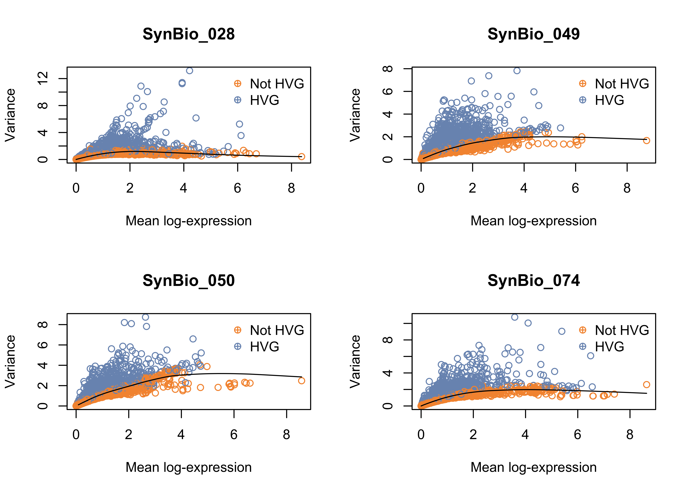
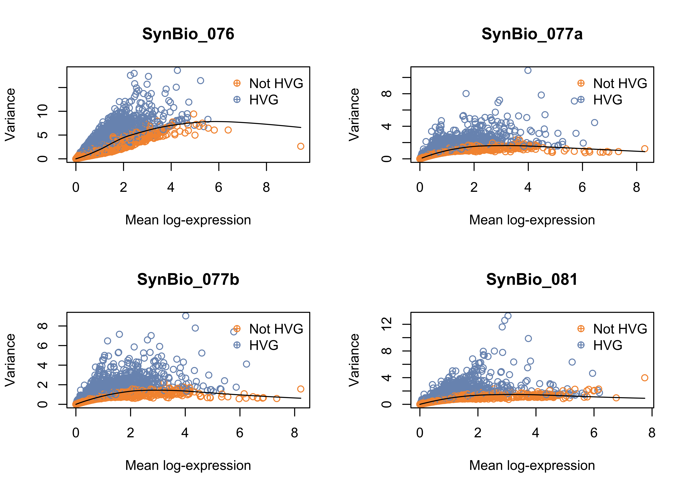
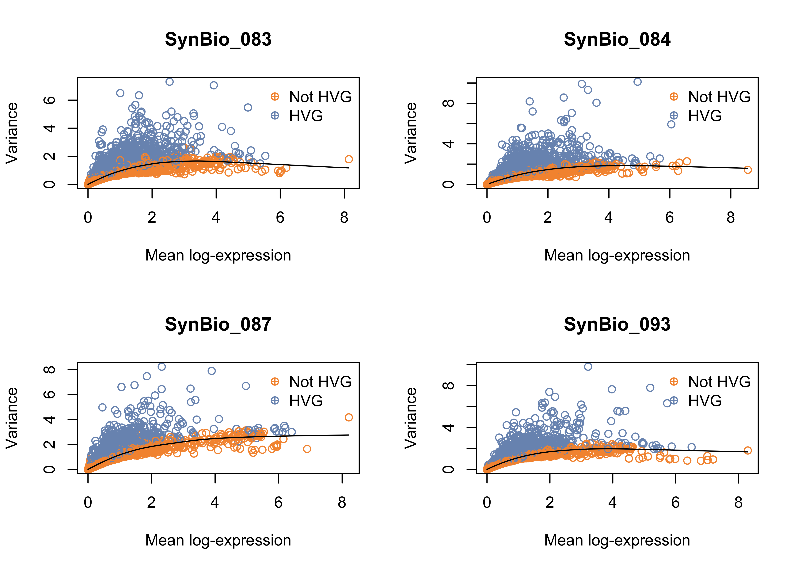
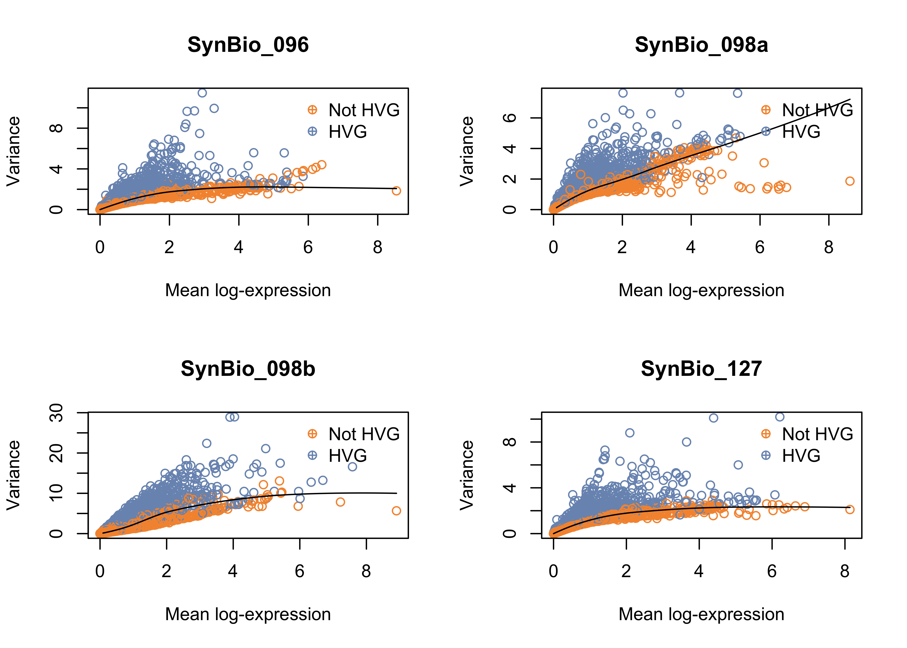
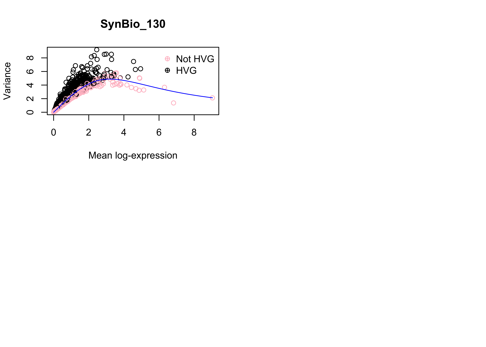
Dimensionality Reduction
Dimensionality reduction aims to reduce the number of separate dimensions in the data. This is possible because different genes are correlated if they are affected by the same biological process. Thus, we do not need to store separate information for individual genes, but can instead compress multiple features into a single dimension. This reduces computational work in downstream analyses like clustering, as calculations only need to be performed for a few dimensions, rather than thousands.
Perform Principal Components Analysis
PCA is a linear transformation of the data, such that a set of variables (genes) are turned into new variables called Principal Components (PCs). PCs combine information across several genes in a way that best captures the variability observed across samples (cells).
#Run PCA
sce <- runPCA(sce, subset_row = top.hvgs)Chosing the number of PCs
The advantage of using PCA is that the total amount of variance explained by the first few PCs is usually enough to capture most of the signal in the data. Therefore, we can exclude the remaining PCs without much loss of information.
#Visualise PCA
data.frame(reducedDim(sce, "PCA")[1:10, 1:5])# extract variance explained
pca_pct_variance <- data.frame(variance = attr(reducedDim(sce, "PCA"), "percentVar"))
pca_pct_variance$PC <- 1:nrow(pca_pct_variance)
#PCA dim estimate the elbowpoint
elbow <- ceiling(as.numeric(maxLikGlobalDimEst(as.matrix(reducedDim(sce, "PCA")), k=10)))
cat(paste0("Elbow Point: ",elbow))Elbow Point: 13#cat(paste0("Elbow Point: ",findElbowPoint(pca_pct_variance$variance)))# Elbow Plot (PC vs variance)
ggplot(pca_pct_variance,aes(PC, variance)) +geom_line(color="grey") +geom_point() +labs(y = "Variance explained (%)")+ geom_vline(xintercept = elbow,color="red")+theme_classic()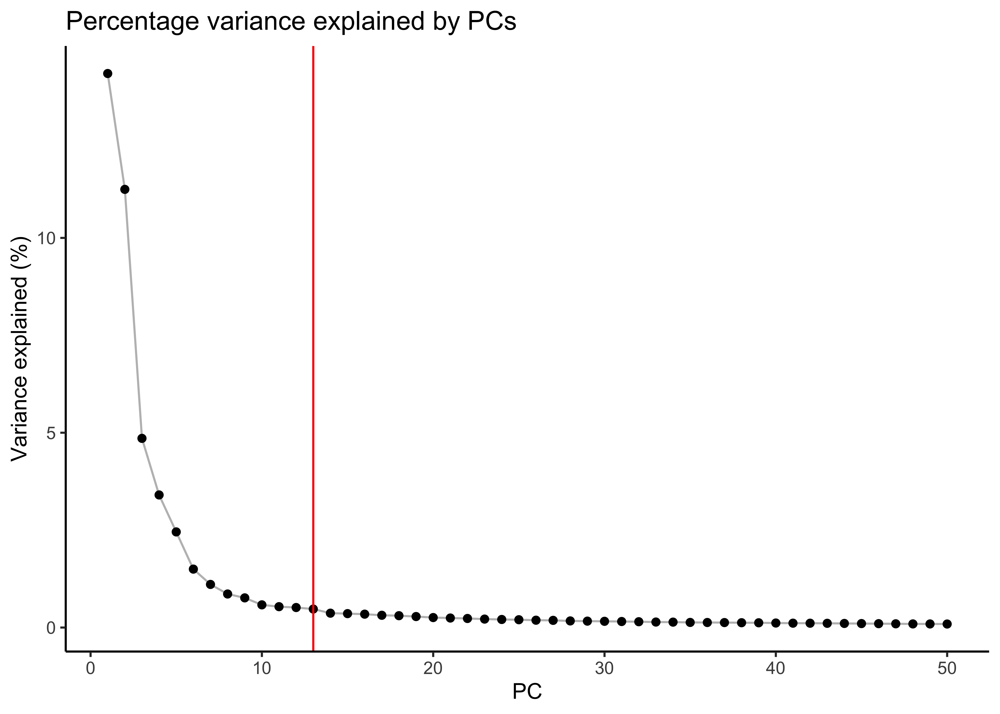
#PCA select nr of PC
reducedDim(sce,"PCA_reduced") <- reducedDim(sce,"PCA")[,seq_len(elbow)]
reducedDimNames(sce)[1] "PCA" "PCA_reduced"ncol(reducedDim(sce,"PCA"))[1] 50ncol(reducedDim(sce,"PCA_reduced"))[1] 13Plot PCA
PCA Normal
#Plot PCA
plotReducedDim(sce, dimred = "PCA", colour_by = "Sample")
PCA reduced
#Plot PCA
plotReducedDim(sce, dimred = "PCA_reduced", colour_by = "Sample")

Plot PCA Facet
PCA per Sample
#Plot PCA per sample
plotReducedDim(sce, dimred="PCA_reduced", colour_by="Sample",point_size=0.8) + facet_wrap(~sce$Sample)+ theme(strip.background=element_rect(fill="white"))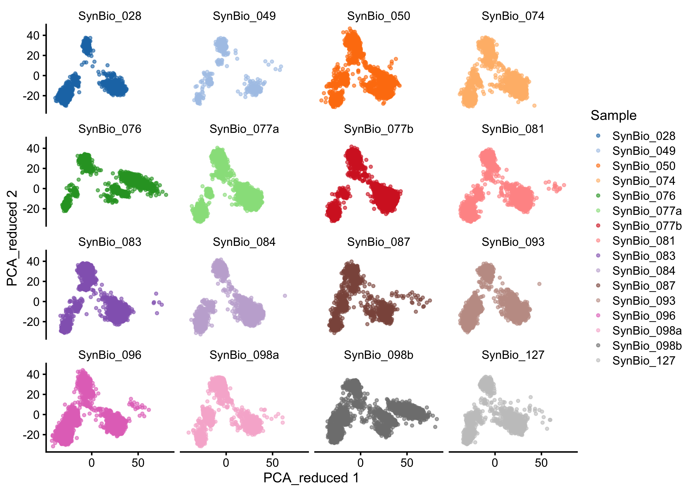
PCA per Joint
plotReducedDim(sce, dimred="PCA_reduced", colour_by="Sample",point_size=0.8) + facet_wrap(~sce$Joint.Location)+ theme(strip.background=element_rect(fill="white"))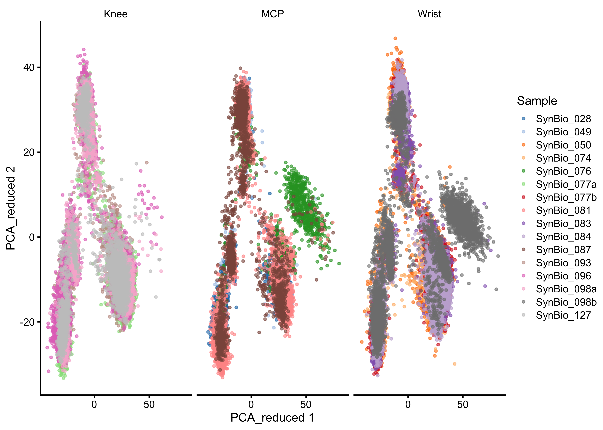
PCA-level metrics
The plot below shows, for each of the PCs, the variance explained by the variables in colData(sce) that are most strongly associated with the PCs. The sample_id variable: it has a unique value for each cell, so can explain all the variation for all PCs.
explanPc <- getExplanatoryPCs(sce,dimred = "PCA",n_dimred=25,variables = c(
"sum","detected","subsets_Mito_percent","Sample","Joint.Location","Pathotype","GCTreatment","Seropositivity","Protocol"))
plotExplanatoryPCs(explanPc) 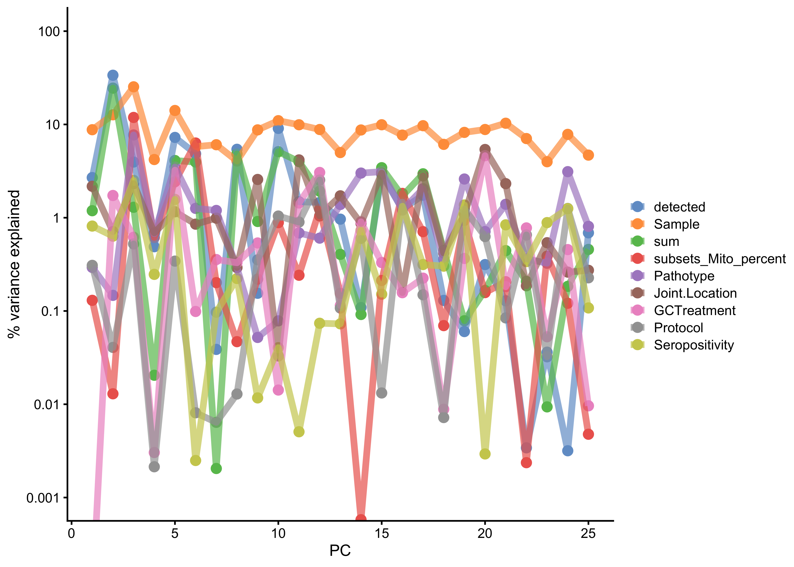
Perform Uniform Manifold Approximation and Projection
While PCA can only capture linear transformations of the original variables (genes), UMAP performs a non-linear transformation of the data to project it down to lower dimensions. This preserves both local and global structures.
#Run UMAP
sce <- runUMAP(sce,name = "UMAP", dimred = "PCA_reduced")Plot UMAP
Colored by Sample
plotReducedDim(sce, dimred="UMAP", colour_by="Sample") #+ facet_wrap(~sce$Sample)
Plot UMAP Facet
Facet by Sample
#Plot UMAP before data integration per sample
plotReducedDim(sce, dimred="UMAP", colour_by="Sample") + facet_wrap(~sce$Sample)+ theme(strip.background=element_rect(fill="white"))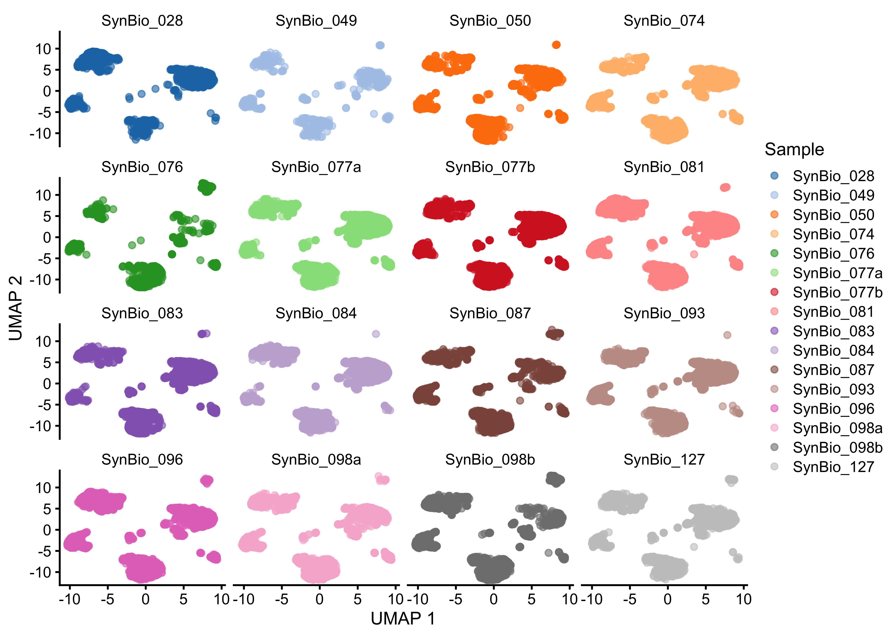
Facet by Joint
#Plot UMAP before data integration per sample
plotReducedDim(sce, dimred="UMAP", colour_by="Sample") + facet_wrap(~sce$Joint.Location)+ theme(strip.background=element_rect(fill="white"))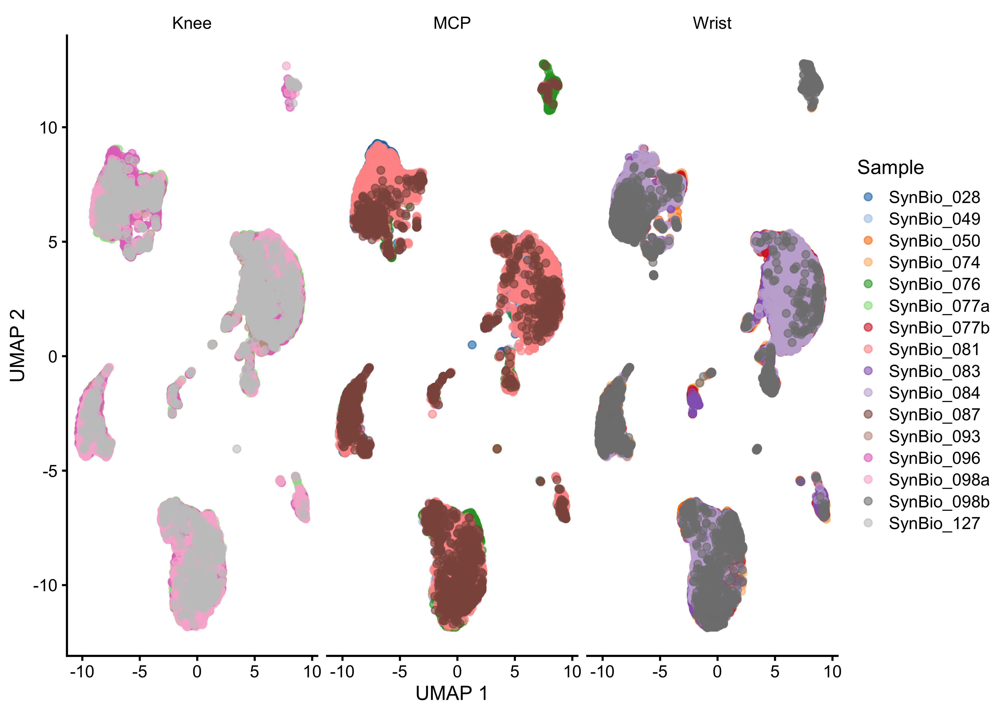
Plot UMAP with QC metrics
Check if there is any clustering caused by number of counts, genes or mitochondrial content. This might also give information about the cell type associated with a cluster.
Colored by Mitochondrial Genes
#Plot UMAP colored by subsets_Mito_percent
plotReducedDim(sce, dimred="UMAP", colour_by="subsets_Mito_percent",order_by="subsets_Mito_percent") + ggtitle("Mitochondrial Genes")
Colored by nr of Genes
#Plot UMAP colored by detected
plotReducedDim(sce, dimred="UMAP", colour_by="detected",order_by="detected") + ggtitle("Number of detected Genes ")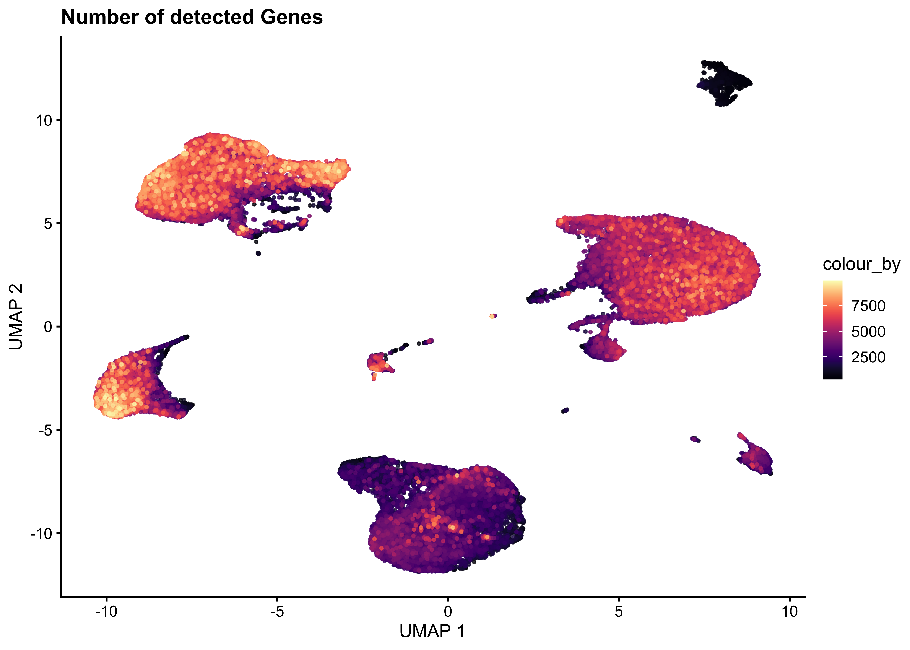
Colored by nr of Counts
#Plot UMAP colored by sum
plotReducedDim(sce, dimred="UMAP", colour_by="sum", order_by = "sum") + ggtitle("Sum of UMI Counts in Cell")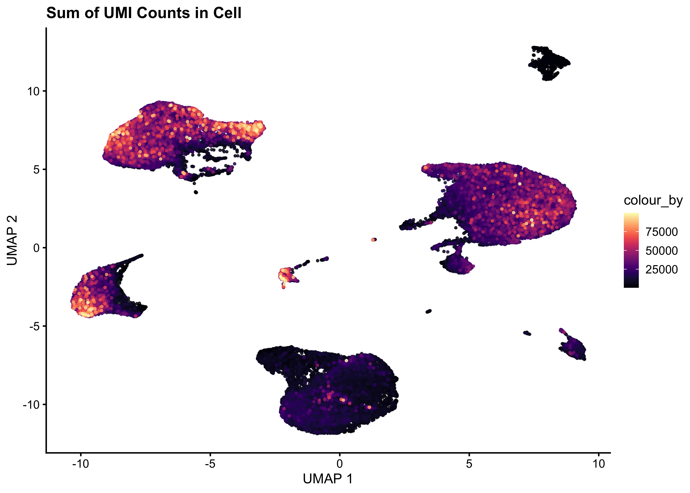
Colored by Ubi Markergene
#Plot UMAP colored by Ubi Markergene expression
plotReducedDim(sce, dimred="UMAP", by_exprs_values = "logcounts", colour_by= rownames(sce)[grepl("(^B2M)", rowData(sce)$Symbol)])+ ggtitle("Expression of some Ubi Markergene")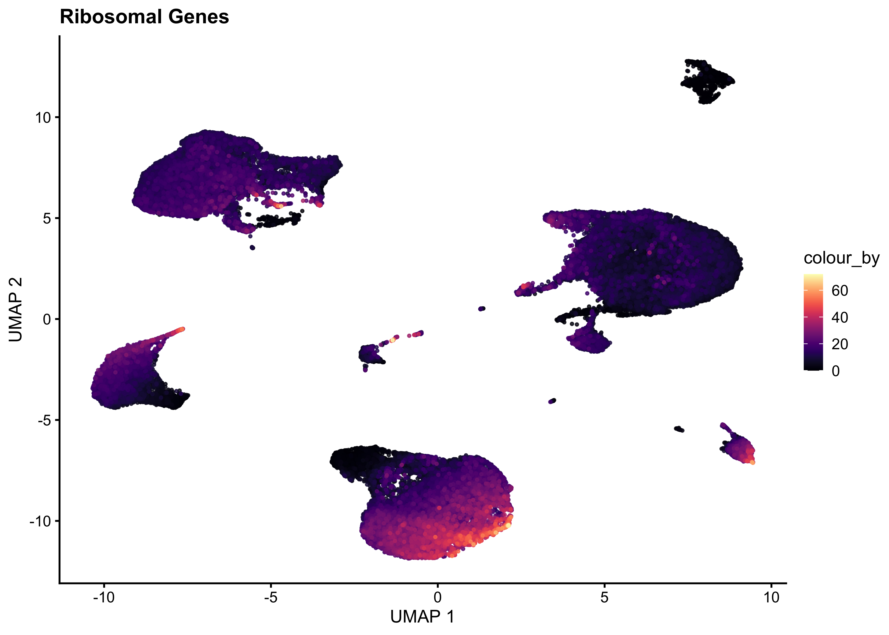
Save Dataset
saveRDS(sce, file =paste0(path,'/output/02_sce_DimensionalityReduction.rds'))
sessionInfo()R version 4.3.3 (2024-02-29)
Platform: x86_64-apple-darwin20 (64-bit)
Running under: macOS Sonoma 14.4.1
Matrix products: default
BLAS: /Library/Frameworks/R.framework/Versions/4.3-x86_64/Resources/lib/libRblas.0.dylib
LAPACK: /Library/Frameworks/R.framework/Versions/4.3-x86_64/Resources/lib/libRlapack.dylib; LAPACK version 3.11.0
locale:
[1] en_US.UTF-8/en_US.UTF-8/en_US.UTF-8/C/en_US.UTF-8/en_US.UTF-8
time zone: Europe/Warsaw
tzcode source: internal
attached base packages:
[1] stats4 stats graphics grDevices utils datasets methods
[8] base
other attached packages:
[1] intrinsicDimension_1.2.0 yaImpute_1.0-34
[3] gridExtra_2.3 scran_1.30.2
[5] scater_1.30.1 scuttle_1.12.0
[7] SingleCellExperiment_1.24.0 SummarizedExperiment_1.32.0
[9] Biobase_2.62.0 GenomicRanges_1.54.1
[11] GenomeInfoDb_1.38.8 IRanges_2.36.0
[13] S4Vectors_0.40.2 BiocGenerics_0.48.1
[15] MatrixGenerics_1.14.0 matrixStats_1.3.0
[17] dplyr_1.1.4 ggplot2_3.5.0
[19] BiocParallel_1.36.0 here_1.0.1
[21] workflowr_1.7.1
loaded via a namespace (and not attached):
[1] bitops_1.0-7 rlang_1.1.3
[3] magrittr_2.0.3 git2r_0.33.0
[5] RcppAnnoy_0.0.22 compiler_4.3.3
[7] getPass_0.2-4 DelayedMatrixStats_1.24.0
[9] callr_3.7.6 vctrs_0.6.5
[11] stringr_1.5.1 pkgconfig_2.0.3
[13] crayon_1.5.2 fastmap_1.1.1
[15] XVector_0.42.0 labeling_0.4.3
[17] utf8_1.2.4 promises_1.3.0
[19] rmarkdown_2.26 ps_1.7.6
[21] ggbeeswarm_0.7.2 xfun_0.43
[23] bluster_1.12.0 zlibbioc_1.48.2
[25] cachem_1.0.8 beachmat_2.18.1
[27] jsonlite_1.8.8 highr_0.10
[29] later_1.3.2 DelayedArray_0.28.0
[31] irlba_2.3.5.1 parallel_4.3.3
[33] cluster_2.1.6 R6_2.5.1
[35] bslib_0.7.0 stringi_1.8.3
[37] limma_3.58.1 jquerylib_0.1.4
[39] Rcpp_1.0.12 knitr_1.45
[41] httpuv_1.6.15 Matrix_1.6-5
[43] igraph_2.0.3 tidyselect_1.2.1
[45] rstudioapi_0.16.0 abind_1.4-5
[47] yaml_2.3.8 viridis_0.6.5
[49] codetools_0.2-19 processx_3.8.4
[51] lattice_0.22-5 tibble_3.2.1
[53] withr_3.0.0 evaluate_0.23
[55] pillar_1.9.0 whisker_0.4.1
[57] generics_0.1.3 rprojroot_2.0.4
[59] RCurl_1.98-1.14 sparseMatrixStats_1.14.0
[61] munsell_0.5.1 scales_1.3.0
[63] glue_1.7.0 metapod_1.10.1
[65] tools_4.3.3 BiocNeighbors_1.20.2
[67] ScaledMatrix_1.10.0 locfit_1.5-9.9
[69] fs_1.6.3 cowplot_1.1.3
[71] grid_4.3.3 edgeR_4.0.16
[73] colorspace_2.1-0 GenomeInfoDbData_1.2.11
[75] beeswarm_0.4.0 BiocSingular_1.18.0
[77] vipor_0.4.7 cli_3.6.2
[79] rsvd_1.0.5 fansi_1.0.6
[81] S4Arrays_1.2.1 viridisLite_0.4.2
[83] uwot_0.2.1 gtable_0.3.4
[85] sass_0.4.9 digest_0.6.35
[87] SparseArray_1.2.4 ggrepel_0.9.5
[89] dqrng_0.3.2 farver_2.1.1
[91] htmltools_0.5.8.1 lifecycle_1.0.4
[93] httr_1.4.7 statmod_1.5.0